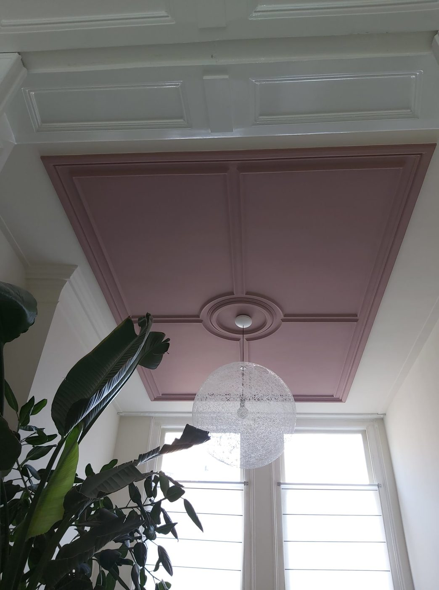
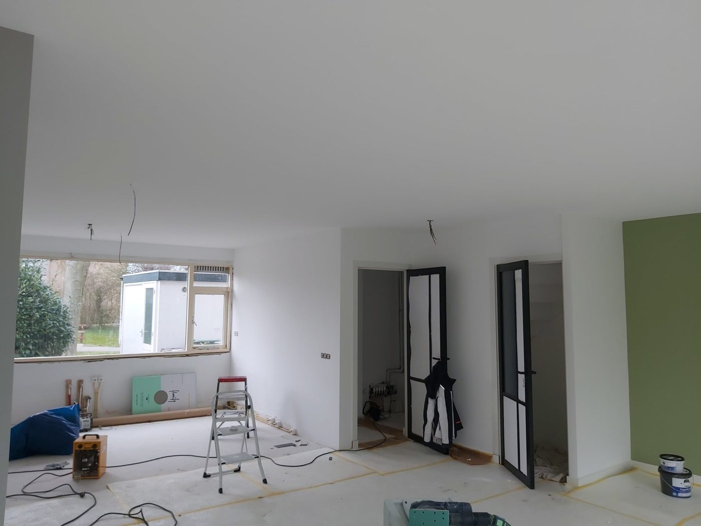
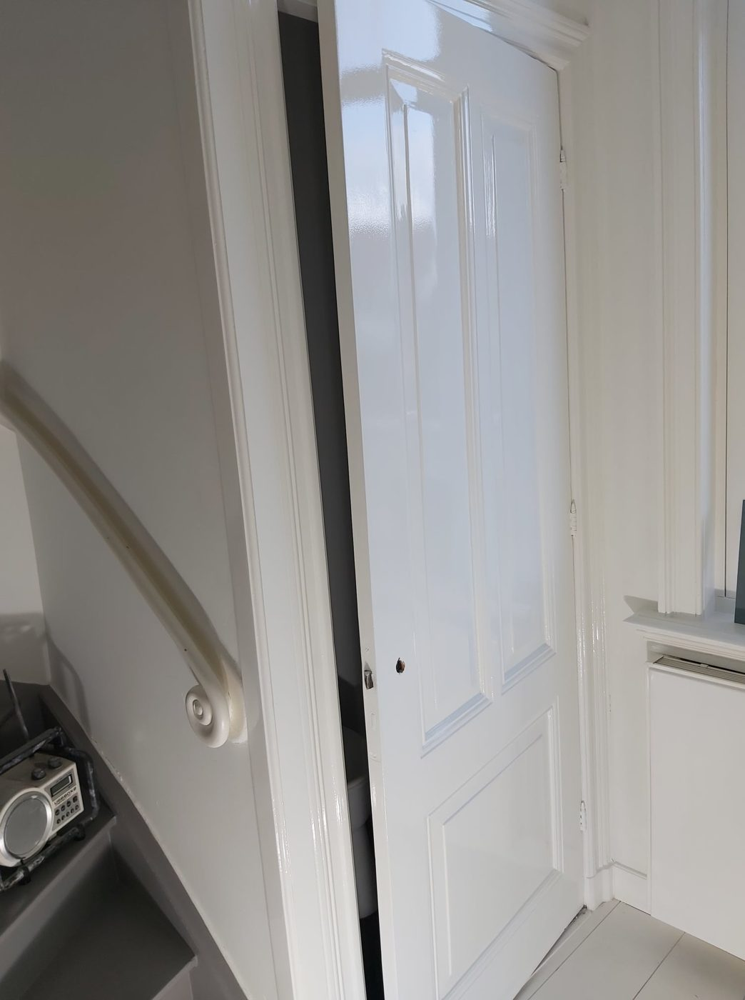

Leiden en omstreken
Binnen strak,
buiten beschermd.
Retzema Schilderwerken schildert woningen, bedrijfspanden en monumenten. Ambachtelijk, met minder milieubelastende materialen, en met een nette werkplek.


Welke kleur
wordt het?
Een klant schreef over "perfect advies over de kleurstelling". Dit zijn kleuren uit eigen projecten. Tik op een staal en zie het resultaat.


 Wand in saliegroen
Wand in saliegroen
Zo ziet het eruit
als het klaar is.
Foto's van eigen projecten in Leiden en omgeving, van jaren dertig woningen tot een rijksmonument.





⟵ sleep of swipe ⟶
Wat Retzema
voor u schildert.
Binnenschilderwerk
Wanden, plafonds, kozijnen en deuren. Voor een renovatie, een nieuwe kleur of een complete restyling.
Buitenschilderwerk
Lakken en coatings die kozijnen, gevelonderdelen en houtwerk beschermen tegen regen, zon en wind.
Houtrot en waterschade
Aangetast houtwerk wordt hersteld, waarna het schilderwerk aansluit op de bestaande afwerking. Ook voor herstel na brand of waterschade.
Onderhoud en VvE's
Planmatig onderhoud voor woningen, bedrijfspanden en Verenigingen van Eigenaren.
Monumentaal schilderwerk
Voor historische panden, onder meer een rijksmonument uit de 19e eeuw in Leiden.
Dakgoot schoonmaken
Een dakgootreiniging voorkomt verstoppingen, lekkages en schade aan de woning.
Wat klanten schrijven · retzemaschilderwerken.nl
Perfect advies over de kleurstelling voor ons huis. Michael heeft gedegen onderzoek gedaan aangezien wij een stalen woning hebben en hoe deze het beste behandeld kan worden.W.A Bunnig, juli 2025
Prima werk aan de boeidelen. Belangrijkste was voor mij dat de afspraak snel en goed werd nagekomen.Jessica Cliné, augustus 2024
Dank je wel voor de snelle service en het mooie, nette resultaat! Michael Retzema denkt mee met de beste oplossing van het schilderwerk.Nienke Kamp, juli 2023
Voor woningen ouder dan twee jaar informeert Retzema graag over het lage btw-tarief van negen procent.